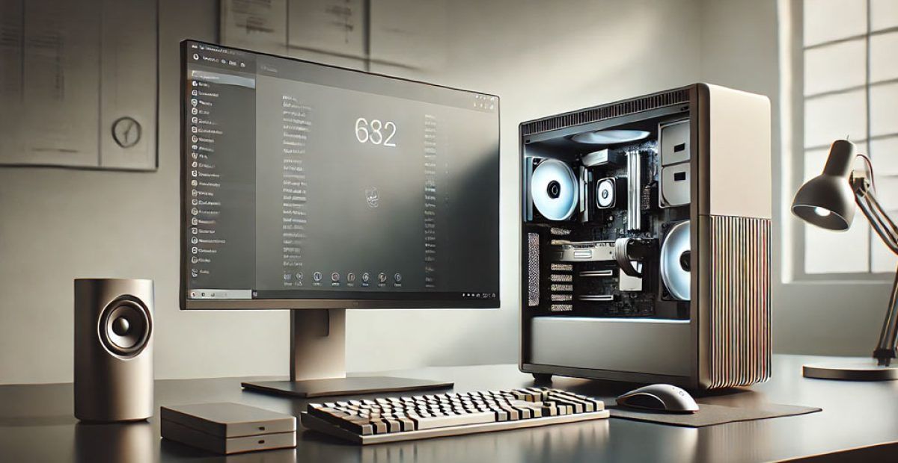
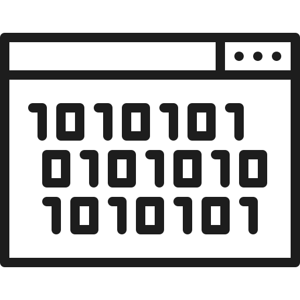
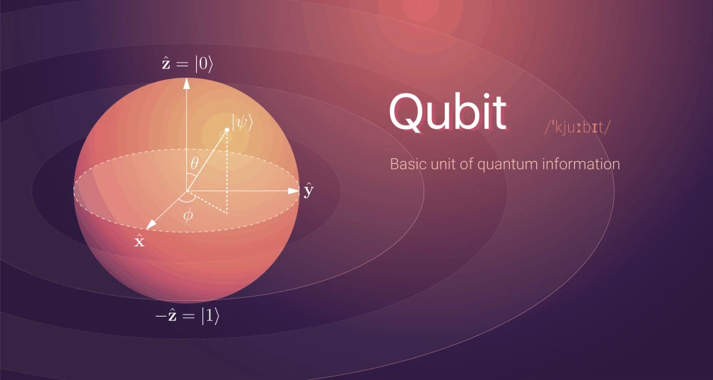
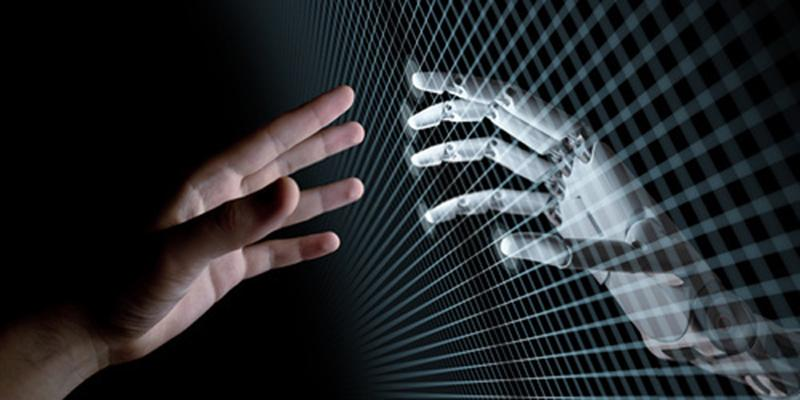
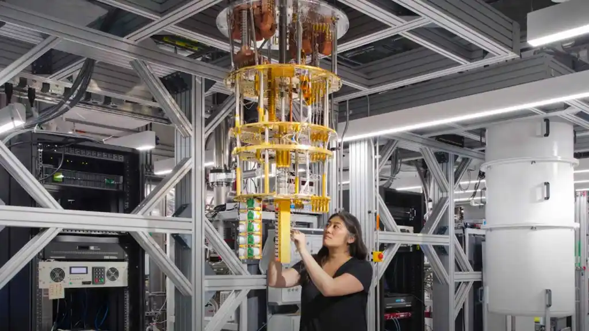
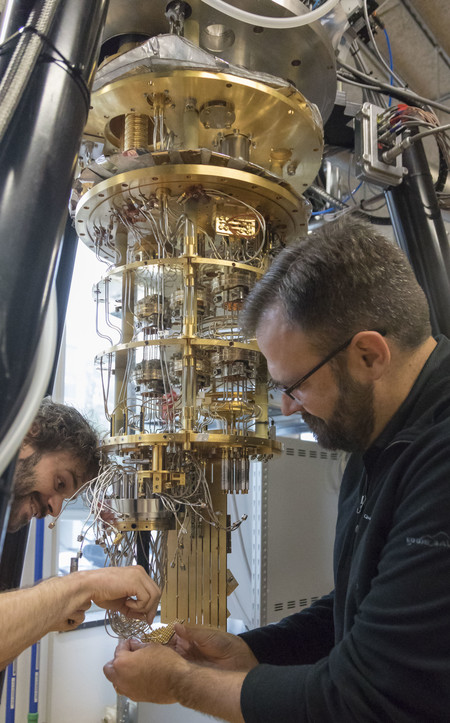

Los Computadores Cuánticos Cambiarán a la Humanidad para Siempre
¿Estamos listos para el mayor salto computacional de la historia o nos enfrentamos a un riesgo de seguridad cibernética irreversible?
Calculando tiempo de lectura...
Introducción
La era que tanto especulábamos sobre dispositivos altamente capaces de lograr cosas impresionantes con las que pocos hombres se atrevieron a soñar y escasos científicos llegaron a abordar, la estamos viviendo ahora. El propósito de esta página web es conocer un tema que abruma a los conocedores del área de la informática, incluso a ser considerado polémico y paranoico: ¿Los Computadores cuánticos son un peligro inminente?, ¿Acaso la privacidad y seguridad de la información personal peligra? ¿Qué ocurrirá próximamente con estos dispositivos? ¿Estarán al alcance de todo el mundo? Para conocer el desenlace de estas interrogantes los invitamos a sumergirse en este artículo que aborda de un tema que se convertirá próximamente en uno de los más tratados a nivel mundial por personas de cualquier índole.
¿Qué debes saber antes? Consejo de Oro
Conocer lo básico antes de tomar una decisión es como construir los cimientos antes de levantar una casa: garantiza estabilidad, seguridad y confianza en lo que estás creando. Además, te prepara para responder a desafíos, justificar tu posición y avanzar con claridad. Se sugiere llegar hasta el final de la página para no sacar conclusiones precipitadas.
¿Saben qué es un Computador? Se los digo brevemente
Un computador, o computadora, es una máquina diseñada para procesar información rápidamente. En términos simples, es un dispositivo que puede recibir datos, procesarlos siguiendo instrucciones específicas y producir resultados útiles, como mostrar información en una pantalla, imprimir documentos, o realizar cálculos complejos.
Un computador funciona como un gran cerebro electrónico que sigue instrucciones llamadas programas. Está compuesto por varios componentes principales, que trabajan juntos para llevar a cabo tareas. El Computador es una herramienta poderosa, compuesta por diferentes partes que trabajan juntas para simplificar nuestra vida. Desde tareas simples como escribir un correo hasta cálculos complejos que ayudan a explorar el espacio, los computadores son esenciales para el mundo moderno.

Computador de hoy en día, para algunos una máquina obsoleta ante la llegada de lo cuántico.
Un Computador Procesa y almacena Datos, pero ¿Cómo?
Una computadora funciona recibiendo datos de entrada, procesándolos y mostrando los resultados a través de dispositivos de salida. Los componentes de un computador interpretan señales eléctricas y transforman estas señales eléctricas en la unidad básica de información de una máquina sofisticada como lo es una computadora, dicha unidad lleva el nombre de bits (abreviatura de binary digits o dígitos binarios), que son la unidad más básica de información en un computador. Mientras que el hardware y los componentes físicos del computador conforman su cuerpo, los bits son como los átomos que construyen toda la información que el sistema procesa, interpreta y almacena.
Un bit puede tener solo dos posibles estados: 0 o 1, lo que representa dos niveles de voltaje diferentes en el hardware, como encendido o apagado, presente o ausente. Este sistema binario es la base de todo el funcionamiento de las computadoras, ya que permite traducir datos complejos en una forma comprensible para la máquina. Entonces el bit es el idioma nativo del computador: un lenguaje sencillo pero increíblemente poderoso que, combinado de maneras precisas, nos permite ejecutar operaciones complejas, visualizar gráficos avanzados y acceder a sistemas de inteligencia artificial. Sin los bits, el computador sería solo un conjunto inerte de piezas.

El Bit: La unidad mínima de información en la computación clásica.
Aquí es donde Todo cambia. ¿Qué es un Qubit o bit Cuántico?
Los qubits, abreviatura de quantum bits (bits cuánticos), son la unidad básica de información en una computadora cuántica. Si los bits tradicionales son los ladrillos sobre los que se construyen las computadoras clásicas, los qubits son como bloques multidimensionales que permiten explorar un universo mucho más amplio de posibilidades. Su funcionamiento se basa en las leyes de la mecánica cuántica, lo que les otorga capacidades únicas y sorprendentes.
A diferencia de un bit clásico, que solo puede estar en uno de dos estados (0 o 1), un qubit puede estar en 0, en 1 o en una superposición de ambos estados al mismo tiempo. Esto significa que un qubit tiene la capacidad de representar simultáneamente múltiples combinaciones de 0 y 1. Gracias a esta propiedad, las computadoras cuánticas pueden procesar grandes cantidades de información a una velocidad exponencialmente superior a la de las computadoras clásicas.
Entonces, mientras los bits clásicos son como interruptores de luz que solo pueden estar encendidos o apagados, los qubits son como interruptores multidimensionales que pueden adoptar infinitas configuraciones entre ambos estados. Este potencial hace que los qubits sean la clave para resolver problemas demasiado complejos para las computadoras clásicas, como el diseño de nuevos materiales, la optimización de redes globales, o la simulación de sistemas biológicos a nivel molecular.

El Qubit: La unidad de información cuántica capaz de estar en múltiples estados gracias a la superposición.
¿Dónde encontramos los Qubits?, Bienvenido al Mundo Cuántico
El mundo cuántico es el conjunto de reglas y fenómenos que rigen el comportamiento de las partículas más pequeñas del universo, como los electrones, fotones y átomos. Es como entrar en un universo paralelo donde las leyes que conocemos (como la gravedad o el tiempo lineal) no siempre se aplican de la misma forma.
El Mundo Cuántico y la Informática
La integración de los principios físicos a los sistemas computacionales nos permite construir hardware totalmente nuevo. Observa esta explicación sobre el funcionamiento fundamental de estas propiedades físicas aplicadas:
Los Computadores Cuánticos son una Maravilla
Una computadora cuántica es una máquina que usa las leyes de la teoría cuántica para resolver problemas complicados por la ley de Moore (la cantidad de transistores en un circuito integrado denso se duplica cada dos años). Un ejemplo es factorizar números grandes. Las computadoras tradicionales están limitadas a circuitos lógicos con varias decenas de transistores, mientras que la cantidad de transistores en un procesador cuántico puede ser del orden de uno a dos millones. Es decir, estas computadoras tendrán un poder exponencial, resolviendo problemas que la computación tradicional ni siquiera puede identificar o crear soluciones.
Los datos, en vez de representarse con bits como en un ordenador convencional, se representarán por Qubits, que serán la unidad base de la computación cuántica. Estos Qubits podrán tener dos valores como los bits normales, pero traen un pequeño concepto adicional que es en el que se basa todo el sistema cuántico, y es que esta unidad estará en sus dos estados a la vez, lo que se conoce como superposición cuántica. Esto es clave, ya que hace que un Qubit pueda tomar sus dos valores a la vez, lo cual por sí solo puede no parecer mucho, pero si lo vamos juntando con más y más Qubits nos quedará un sistema con miles de resultados posibles al mismo tiempo que serán todos correctos y a la vez incorrectos hasta que queramos consultar un resultado.
Y es en el resultado donde está el verdadero poder de los ordenadores cuánticos, porque si observamos bien el concepto que acabamos de introducir, tendremos una máquina teóricamente capaz de obtener todos los resultados posibles a un problema de forma simultánea. Y es precisamente eso lo que hace que sea una amenaza muy seria para la ciberseguridad y sobre todo sus mecanismos de encriptación.
¿Cuál es la Función de un Computador Cuántico?
Simplificadamente se puede decir que se basa en el mismo concepto de los ordenadores convencionales: tomar un dato, procesarlo y devolver un resultado. A partir de ahí todo es diferente: el dato y cómo se representará será diferente, el proceso será mucho más complejo y el resultado directamente pasará a estar indefinido y a variar dependiendo de cuándo hagamos la operación y en qué condiciones, ya que su funcionamiento estará ligado a la física cuántica. Es como pensar en el clásico ejemplo del gato de Schrodinger, el cual consiste en introducir a un gato en una caja con una ampolla de gas tóxico en su interior que se podía romper en cualquier momento. Con la caja cerrada, nadie puede saber si la ampolla se ha roto o no. Transcurrida una hora desde la introducción del gato, habremos de considerar que el animal estaría, al mismo tiempo, vivo y muerto; y solo podremos conocer su estado en el momento en que abramos la caja y lo comprobemos. ¡Un cruel experimento!, pero aquí aplicado a lo descomunal y en un entorno mucho más avanzado y grande.
Los procesadores cuánticos pueden sacar conclusiones sobre una partícula midiendo otra (entrelazamiento cuántico). Por ejemplo, pueden determinar que si un bit gira hacia arriba, el otro siempre girará hacia abajo y viceversa. Entre los usos que ya se conocen, mejorará la seguridad de las comunicaciones y será fundamental para la investigación científica, ayudando por ejemplo a diseñar fármacos o nuevos materiales. Asimismo, permitirá acelerar las tareas de optimización en los procesos industriales y puede ser clave en campos como la inteligencia artificial, donde el análisis de datos tiene mucha importancia. Otro gran uso que seguramente tendrá será mejorarse a sí misma y acelerar ese proceso de desarrollo que resulta extremadamente complejo desde el punto de vista tecnológico. Compañías como Airbus utilizan la computación cuántica para diseñar aviones más eficientes. Además, los qubits permitirán avances notables en los sistemas de planificación del tráfico y la optimización de rutas.
El Potencial de Los Qubits: Fascinante y Aterrador
La verdadera magia de los qubits radica en cómo trabajan juntos. Por ejemplo: Con n bits clásicos, solo se pueden representar 2n combinaciones posibles, pero una computadora clásica tiene que evaluarlas una por una. Con n qubits, las computadoras cuánticas pueden representar y evaluar las 2n combinaciones simultáneamente, gracias a la superposición y el entrelazamiento.
Esto significa que 20 qubits pueden procesar más combinaciones simultáneas que las que contiene una computadora clásica trabajando con millones de bits. Conociendo esto, les concluyo en este punto: El verdadero potencial radica en que las computadoras cuánticas, con su capacidad para procesar información a velocidades increíblemente rápidas y resolver problemas imposibles de abordar por máquinas clásicas presentan riesgos más graves y de mayor alcance en términos de seguridad, control y poder.
Una Maravilla que trae riesgos consigo
La Computación cuántica podría poner en riesgo las protecciones criptográficas actuales. Aquí les dejo algo en qué pensar:
Acceso desigual
Como señala Forbes, un gran riesgo social que presenta la computación cuántica es el crecimiento exponencial de la brecha digital. Sus elevados costos significan que solo los más acaudalados tendrán acceso a esta tecnología. Esto tan solo acentuará la brecha digital, sin importar si se trata de personas, gobiernos o compañías.
Por esta razón, los gobiernos y las organizaciones tendrán que hallar formas para que todos adopten esta tecnología de forma equitativa. Esto implica la creación de campañas pedagógicas. Al fin y al cabo, no todos saben qué es la computación cuántica. Otras ayudas pueden incluir subsidios para los sectores menos favorecidos. Los proveedores tecnológicos también pueden ayudar ofreciendo acceso equitativo a su tecnología mediante la nube.
Ciberseguridad y Encriptación
Compañías como AT&T e IBM predicen que en la próxima década la computación cuántica podría ser utilizada por hackers y naciones hostiles para penetrar los protocolos de encriptación existentes. Esto afectaría a una gran cantidad de servicios, sobre todo los relacionados con el comercio y las transacciones financieras. La computación cuántica incluso volvería obsoletos a los formidables protocolos de ciberseguridad de tecnologías blockchain, tales como Ethereum y Bitcoin. Por el momento, la única solución es que las organizaciones se vuelvan “criptoágiles”.
Este término se refiere a la habilidad de las empresas para mejorar rápidamente sus algoritmos, parámetros, procesos y tecnologías criptográficas para responder a nuevos protocolos, estándares y amenazas.
Lo anterior requiere que las compañías hagan un inventario de sus datos, intercambios de datos y los algoritmos criptográficos que los protegen. El Instituto Nacional de Estándares y Tecnología (NIST) está trabajando para identificar estándares de encriptación resistentes a la computación cuántica.
Se uniría a otras Paranoias divagadas por los Medios
IA, recolección de datos y privacidad
Con el estallido de la inteligencia artificial (IA) en 2023, ha habido un gran incentivo para crear políticas y leyes que aseguren la privacidad de los datos y garanticen que la IA se utilice en beneficio público. La Unión Europea y varios países de Latinoamérica ya están dando los primeros pasos para tener su propia legislación alrededor de esta tecnología.
Aun así, la recolección de datos sigue ocurriendo y solo empeorará con la llegada de la computación cuántica. Al fin y al cabo, permitiría procesar un mayor volumen de datos mucho más rápido que los servidores más sofisticados disponibles en la actualidad.
Explicabilidad
La explicabilidad se refiere al proceso de hacer inteligibles los resultados de la IA. En otras palabras, descifrar cómo una IA llegó a una solución. Hoy en día, este proceso es bastante complejo dada la cantidad de algoritmos involucrados en la creación de IA cada vez más avanzadas. Sin embargo, es un proceso teóricamente posible.
La computación cuántica lo complicará todo. Cuando se integre esta tecnología con el machine learning, la explicabilidad se convertirá más en un problema físico que de programación. Será más difícil juzgar la toma de decisiones de una IA potenciada por computación cuántica porque será capaz de reconocer patrones más complejos.
Tensiones globales y la “carrera armamentística” cuántica
La mayoría de países industrializados están invirtiendo considerablemente en el desarrollo de tecnologías cuánticas. Dado que son vistas como la piedra angular del futuro de la ciberseguridad nacional, esta situación se asemeja a una “carrera armamentística”. Desafortunadamente, esto puede aumentar la tensión geopolítica entre naciones.
Nuevas cosas que Pensar
Salud y ciencias de la vida
Se espera que la computación cuántica juegue un rol importante en la edición genética. No solo ayudaría a entender sus posibles efectos, sino que habilitaría nuevas y más rápidas metodologías de investigación. En un principio, esto no luce tan mal: la edición genética puede emplearse para eliminar enfermedades. Sin embargo, se requiere una vigilancia constante de los investigadores que saquen provecho de esta tecnología.
Materiales emergentes
Se espera que la computación cuántica potencie la investigación y el desarrollo de nuevos materiales. Esto será posible gracias a sofisticadas simulaciones químicas. He aquí dos ejemplos de tecnologías anteriores que trajeron efectos imprevistos y nos obligan a reflexionar: Cuando el insecticida DDT fue introducido para reducir el número de enfermedades transmitidas por insectos, eventualmente se descubrió que su uso era perjudicial para la población de aves. Similarmente, la creación de los plásticos —aunque ha traído varios beneficios— ha sido muy perjudicial para el medio ambiente.
¿La Humanidad está preparada para poder controlar estos posibles riesgos?
A medida que las computadoras cuánticas permiten algoritmos más eficientes, aumentan los peligros de la piratería. Dichos riesgos de seguridad han sido una prioridad principal en Google. Tienen grandes expectativas sobre el enfoque que adoptarán para crear su futura máquina cuántica. Mientras tanto, DARPA (Agencia de Proyectos de Investigación Avanzada de Defensa) ha establecido grandes desafíos para la informática con un premio considerable de $2 millones. El objetivo de DARPA es mantener relevante la fuerza cibernética de EE. UU. en medio del rápido declive de la Ley de Moore y la posible pérdida de liderazgo tecnológico mundial.
Si proliferan las computadoras cuánticas, amenazarán todo: no solo los registros bancarios y los documentos médicos, sino todo. Representan una fuga de seguridad tan fundamental que podría ser peor que el apocalipsis. La computadora cuántica representa una posible amenaza para la infraestructura de los Estados Unidos. Sin embargo, las autoridades estadounidenses no cuentan con suficientes medidas para detener este tipo de peligro. Una forma en que pueden defenderse es inventando nuevos estándares de seguridad que funcionen con las tecnologías actuales.
Sin embargo, cuando la computación cuántica madure, presentará un gran desafío. Los informáticos deberán desarrollar los protocolos y las protecciones necesarias para garantizar la seguridad de esta tecnología emergente. Si no se toman estas precauciones, la computación cuántica podría tener resultados desastrosos en la seguridad cibernética. Es necesario que se desarrolle un protocolo para proporcionar seguridad a las computadoras cuánticas. Los piratas informáticos podrán acceder e interrumpir los sistemas en vivo, lo que exige una necesidad urgente de avances en seguridad cibernética. Estos nuevos sistemas no pueden simplemente implementar los protocolos de protección existentes porque aún no están completamente desarrollados. El costo de investigación y desarrollo es alto y las ganancias una vez terminado el producto son relativamente bajas.
La computación cuántica es un tema candente en este momento que impactará a la sociedad de una manera que ni siquiera podemos predecir si no reconocemos su importancia ahora. La mayoría de las computadoras hoy en día funcionan de acuerdo con señales digitales. Si alguien intenta piratear la computadora, cambiará esa señal digital a otra forma o la cancelará, lo que se puede notar fácilmente. Sin embargo, las computadoras cuánticas usan bits cuánticos para los cálculos. Están unidos de una manera que los hace tan sensibles a los cambios en la información que son exponencialmente más vulnerables a los ataques que las computadoras digitales. Si alguien logra piratear una computadora cuántica, aunque aún no es posible, tendría serias implicaciones para mantener nuestros estándares de seguridad.

La ambición humana: ¿Es nuestra mayor cualidad o nuestro mayor riesgo en la frontera tecnológica?
Las Empresas y Corporaciones serán las primeras en tomar prevenciones
Si hay que creer en los documentos filtrados de la NSA, es posible que tengamos un duro despertar cuando las computadoras cuánticas se vuelvan tecnológicamente factibles. Estas máquinas podrán realizar cálculos en mucho menos tiempo que cualquier computadora convencional y harán que nuestros cifrados actuales sean ineficaces. Las filtraciones afirman que en 30 años, dos computadoras cuánticas de tamaño mediano podrían incluso romper la seguridad de RSA, que actualmente está configurado en 2048 bits.
Cualquier negocio que se base en la criptografía moderna corre el riesgo de ser pirateado en un futuro próximo. Pero, ¿qué pueden hacer las empresas para protegerse? Resulta que existen algunas soluciones bastante sencillas para que las empresas preserven (o mejoren) la seguridad en medio de todo este alboroto. Los autores recomiendan invertir en técnicas de cifrado híbridas, blockchain y TLS (Transport Layer Security).
En términos simples, las computadoras cuánticas procesan la información de manera diferente a las computadoras digitales actuales. Como anteriormente se mencionó se debe a su capacidad de tener bits que se encuentran en más de un estado simultáneamente, lo que significa que pueden realizar muchos cálculos a la vez. En un futuro dominado por la computación cuántica, toda la computación regular quedará virtualmente obsoleta. Los hackers podrán acceder a los secretos más profundos de las empresas sin necesidad de contraseña. Para evitar este destino, las empresas deben adoptar técnicas de encriptación que protejan contra la tecnología cuántica, pero no pueden darse el lujo de dejar de innovar de manera demasiado drástica.
La amenaza potencial que se avecina de la computación cuántica debe tomarse en serio, pero esto no significa que deba entrar en pánico. La mejor manera de protegerse es planificar con anticipación y pensar en posibles soluciones. Es posible que la incorporación de elementos de criptografía cuántica no siempre sea posible para todos los clientes debido al costo. Pero podría ayudar a asegurar un cliente importante que no puede arriesgarse a futuras interferencias en sus operaciones sensibles.
¿Todo esto quiere decir que no merecen la pena? ¡Por supuesto que NO!
El ser humano siempre ha optado por asumir riesgos con tal de conseguir algo más grande del otro lado. Tomando como ejemplo el punto de las encriptaciones, lo primero que se está haciendo es reconocer el problema: un paso vital para empezar a tomar acciones para resolverlo. Y es por eso que hay que celebrar que cada vez más empresas importantes en el sector den importancia a buscar alternativas a los estándares actuales de encriptación y a invertir en nuevos algoritmos que ya se empiezan a apodar como “resistentes a los ordenadores cuánticos”.
Pero no por ello hay que confiarse, ya que desarrollar algoritmos y sistemas resistentes a los ordenadores cuánticos no es una tarea sencilla; es más, es bastante compleja y algo a lo que muchos profesionales le dedican grandes esfuerzos sin resultados prometedores. Como por ejemplo se puede ver en la competición que lanzó el NIST en 2016 cuyos ganadores se anunciarán próximamente y cuyos participantes han bajado de los 69 competidores iniciales a tan solo 15, dejando en evidencia la complejidad del asunto.
Y ese no es el único problema, ya que una vez desarrollada una solución habría que implementarla, lo cual igual es sencillo en sistemas cerrados, pero hacer un cambio a tan gran escala de una de las bases del internet moderno sería como intentar cambiar las columnas de un edificio sin que se venga abajo, teniendo que adaptar todas las tecnologías y sistemas actuales al nuevo estándar.
Pero, aun así, se están haciendo esfuerzos desde diferentes empresas para intentar crear una criptografía a prueba de estos futuros ordenadores, destacando a Intel e IBM:
Desde la empresa Intel se han mostrado muy preocupados con este problema, lo cual dice mucho, ya que ellos mismos están desarrollando su propia tecnología de ordenadores cuánticos. En su última presentación del Intel Vision, hicieron hincapié en el tema anunciando que tienen como objetivo conseguir estar protegidos contra los ordenadores cuánticos y su tecnología en 2030. Esto lo están trabajando ya incluyendo procesadores criptográficos cada vez más avanzados en sus procesadores Xeon y estudiando detenidamente los impactos que los ordenadores cuánticos puedan tener en la criptografía para diseñar sus productos en consecuencia.
Además, en Intel tienen planeado tomar medidas como el aumento de los tamaños de las claves, mejorar la robustez de los algoritmos y buscar alternativas a los servicios de autentificación como firmas digitales o encapsulación de claves para asegurar las diferentes operaciones en la web.
Otra gran empresa implicada es IBM, la cual también está desarrollando ordenadores cuánticos ofreciendo sus servicios para que cualquiera los pueda usar en la nube. Por eso, también están al tanto de los problemas que puede causar la tecnología y están desarrollando diferentes tecnologías para combatir su impacto como técnicas de firma digital que sean suficientemente robustas a los ordenadores cuánticos y apostando por la implementación de criptografía segura contra estos ordenadores y sistemas criptográficos clásicos combinados.
Además, algunos de sus clientes en las industrias de la banca o la automoción ya están experimentando con diferentes formas de comunicación completamente seguras para poder implementarla en un futuro para que no les afecte la entrada en escena de la computación cuántica.

“Los ordenadores cuánticos se basan en el hecho de que el estado cuántico de la memoria de un ordenador contiene mucha más información que sus descripciones clásicas” — Stephen Hawking
¿Valdrá la pena todo esto para cumplir las ambiciones del Hombre?
Las computadoras cuánticas representan un salto tecnológico sin precedentes, con el potencial de transformar profundamente cada aspecto de nuestras vidas. Desde descubrir curas para enfermedades incurables hasta diseñar fuentes de energía más limpias y eficientes, estas máquinas prometen soluciones revolucionarias a los problemas más complejos del mundo. Su capacidad para optimizar sistemas de transporte, proteger nuestra información en internet, mejorar la inteligencia artificial y predecir eventos climáticos o financieros, posiciona a las computadoras cuánticas como una herramienta esencial para la evolución de nuestra sociedad.
Sin embargo, con este poder extraordinario también vienen riesgos significativos. La posibilidad de vulnerar la seguridad digital, concentrar el poder en unas pocas manos o desatar consecuencias no intencionadas a través de sistemas incontrolables plantea desafíos que no deben tomarse a la ligera. Pero la historia de la humanidad nos enseña que cada gran avance tecnológico —desde el fuego hasta la electricidad y la inteligencia artificial— ha implicado riesgos que hemos aprendido a gestionar con el tiempo.

“La naturaleza no es clásica, y si quieres simular la naturaleza, tendrás que hacerlo de forma cuántica.” — Richard Feynman
Lo que hace que las computadoras cuánticas sean verdaderamente extraordinarias es que, si bien su poder puede parecer abrumador, también nos brindan las herramientas para afrontar los peligros que generan. Su capacidad para reforzar la criptografía cuántica, simular escenarios complejos y construir mejores sistemas nos da la oportunidad de mitigar los riesgos mientras aprovechamos sus beneficios.
Invertir en el desarrollo de las computadoras cuánticas es apostar por un mundo más brillante y avanzado. Como humanidad, hemos demostrado que somos capaces de convivir con tecnologías disruptivas, siempre buscando maximizar su potencial para el bien común. La clave está en avanzar con responsabilidad, establecer regulaciones éticas y democratizar el acceso a esta tecnología para que sus beneficios lleguen a todos.
En última instancia, aceptar los riesgos que conlleva la exposición pública de estas máquinas no es solo una muestra de confianza en nuestras capacidades para gestionar el cambio, sino también un reconocimiento de que las recompensas superan con creces los peligros. Las computadoras cuánticas no son solo una herramienta: son un puente hacia un mundo lleno de posibilidades, y vale completamente la pena apostar por su desarrollo y aplicación en todos los aspectos de nuestra vida.